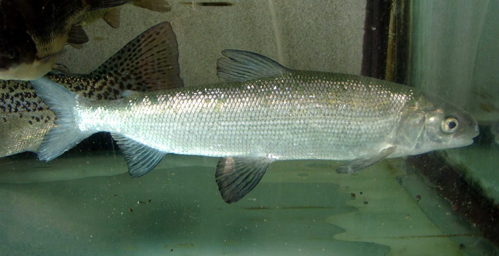

Biologia i rozpoznawanie
Wygląd i rozpoznawanie
Sieja to smukła, wrzecionowata ryba o wyraźnie srebrzystym, lekko niebieskawym lub oliwkowym grzbiecie i jaśniejszych bokach, pokryta stosunkowo dużą, cienką i łatwo odpadającą łuską. Jak wszystkie łososiowate ma niewielką płetwę tłuszczową między grzbietową a ogonową — to szybki sposób odróżnienia jej od karpiowatych. Głowa jest niewielka, a otwór gębowy dolny lub prawie końcowy, z górną szczęką wysuniętą przed dolną — przystosowanie do zbierania drobnego pokarmu z dna i toni. Ta cecha odróżnia sieję od blisko spokrewnionej sielawy, która ma pysk skierowany ku górze. Sieja jest przy tym rybą większą i masywniejszą: przeciętnie osiąga 30–45 cm i 0,5–1,5 kg, a okazy powyżej 2–3 kg i 60 cm należą do rzadkości. Ciało jest pozbawione plam, co dodatkowo odróżnia ją od pstrągowatych.
Środowisko i występowanie w Polsce
Sieja pomorska jest rybą zimnolubną, wymagającą wód czystych, dobrze natlenionych i chłodnych — dlatego jej naturalnym środowiskiem są głębokie, oligotroficzne jeziora północnej Polski, głównie na Pomorzu, Warmii, Mazurach i Pojezierzu Kaszubskim. Latem przebywa w głębszych, chłodnych warstwach wody poniżej termokliny, gdzie utrzymuje się odpowiednia temperatura i wysokie natlenienie; w chłodniejszych porach roku podchodzi płycej. Historycznie sieja występowała także w formie wędrownej, wchodzącej z Bałtyku do rzek na tarło, jednak zabudowa i zanieczyszczenie rzek mocno ograniczyły te populacje. W wielu jeziorach obecność siei opiera się dziś na systematycznych zarybieniach i programach restytucji prowadzonych przez ośrodki hodowlane, instytuty rybackie i okręgi. Eutrofizacja jezior, ocieplenie wód oraz deficyty tlenu w warstwie przydennej to główne zagrożenia, przez które areał gatunku wyraźnie się kurczy.
Biologia i tarło
Sieja to gatunek długowieczny i późno dojrzewający jak na warunki polskie — dojrzałość płciową osiąga zwykle w wieku trzech do pięciu lat, a dożywa kilkunastu lat. Tarło odbywa jesienią i wczesną zimą, najczęściej od listopada do stycznia, gdy temperatura wody spada do około 3–6°C. To istotna różnica wobec większości ryb naszych wód, które trą się wiosną. Ikra składana jest na twardym, żwirowym lub kamienistym dnie na płyciznach, a niekiedy sieja wchodzi w tym celu do dopływów. Rozwój ikry w niskiej temperaturze trwa długo, nawet kilka miesięcy, a wylęg następuje wczesną wiosną, gdy w wodzie pojawia się pierwszy plankton. Ten jesienno-zimowy cykl rozrodczy sprawia, że sieja jest szczególnie wrażliwa na warunki panujące w wodzie zimą — deficyty tlenu, zamulenie tarlisk i wahania temperatury potrafią zniweczyć cały sukces rozrodczy w danym roku.
Żerowanie i tryb życia w sezonach
Sieja jest wszystkożerna z wyraźnym nachyleniem ku pokarmowi zwierzęcemu z dna i toni. Podstawą jej diety są bezkręgowce denne: larwy ochotek, kiełże, mięczaki, drobne skorupiaki oraz zooplankton, a większe osobniki sięgają także po drobny narybek. Dolny otwór gębowy pozwala jej skutecznie zbierać organizmy z miękkiego i twardego dna, co czyni z niej rybę raczej dennego niż powierzchniowego żerowania. Aktywność siei jest ściśle powiązana z temperaturą: latem koncentruje się w chłodnych, głębokich warstwach i żeruje głównie o świcie i zmierzchu, wiosną i jesienią rozprasza się szerzej i podchodzi płycej. Zimą pozostaje aktywna pod lodem, co czyni ją obiektem zainteresowania wędkarzy podlodowych. Jako ryba stadna przemieszcza się ławicami za pokarmem, dlatego jej rozmieszczenie w jeziorze bywa zmienne i wymaga cierpliwego poszukiwania. Żaden kalendarz nie zastąpi tu obserwacji wody i echosondy.
Przepisy, metody i taktyka
Przepisy krajowe i zasady lokalne
Przepisy krajowe: Wody śródlądowe: wymiar 35 cm; okres ochronny 15 października–31 grudnia. Źródło: Dz.U. 2023 poz. 1373, § 6–7
Granica okresu ochronnego: jeżeli pierwszy lub ostatni dzień okresu przypada w dzień ustawowo wolny od pracy, okres skraca się o ten dzień (§ 7 ust. 2); wyjątkiem jest całoroczna ochrona jesiotra.
Przed połowem: sprawdź aktualny regulamin i zezwolenie dla konkretnej wody. Wymiar, okres, limit lub zakaz lokalny może być ostrzejszy; brak wartości krajowej nie oznacza zgody na zabranie ryby.
Metody i przynęty
Sieja nie jest typową rybą drapieżną, więc łowi się ją metodami dopasowanymi do jej dennego, drobnego żerowania. Klasyką jest wędkarstwo podlodowe zimą — na drobne mormyszki, błystki-świdrówki i małe przynęty ozdobione larwą ochotki, prowadzone tuż nad dnem lub w toni, w miejscu wcześniej namierzonym echosondą. W sezonie otwartej wody stosuje się delikatne metody gruntowe i spławikowe z drobnymi przynętami naturalnymi, a także lekki, wolno prowadzony spinning najmniejszymi błystkami dla większych osobników polujących na narybek. Sprawdza się również metoda muchowa z drobnymi, ciężkimi nimfami serwowanymi przy dnie. We wszystkich przypadkach kluczem jest delikatność zestawu: cienkie przypony, małe haki i subtelna prezentacja, bo sieja bierze ostrożnie. Pamiętaj, że dobór metody musi uwzględniać obowiązujące na danej wodzie ograniczenia — na niektórych łowiskach część technik lub przynęt może być zabroniona.
Taktyka łowienia
Skuteczne łowienie siei zaczyna się od lokalizacji ryby, a nie od wyboru przynęty. Sieja trzyma się chłodnych, głębszych partii jeziora i przemieszcza ławicami, dlatego echosonda i cierpliwe rozpoznanie dna są nieocenione — szukaj krawędzi, stoków głębi, twardego dna i miejsc, gdzie gromadzi się pokarm denny. Zimą pod lodem warto wywiercić serię otworów wzdłuż krawędzi głębi i metodycznie je sprawdzać, zmieniając głębokość prowadzenia przynęty, aż znajdziesz aktywne stado. Najlepsze pory to zwykle świt i zmierzch, choć pod lodem brania rozkładają się bardziej równomiernie. Sieja bierze delikatnie — często odczuwalne jest jedynie subtelne zatrzymanie lub lekkie „odbicie” szczytówki, więc liczy się stały kontakt z przynętą i miękkie, ale zdecydowane zacięcie. Po odnalezieniu stada obławiaj je metodycznie, bo ławica potrafi stać w jednym miejscu długo. Cierpliwość i mobilność są tu ważniejsze niż siła sprzętu.
Wartość kulinarna
Sieja od wieków uchodzi za jedną z najsmaczniejszych ryb słodkowodnych — jej białe, delikatne i dość tłuste mięso o subtelnym smaku jest wysoko cenione w kuchni i tradycyjnie zaliczane do ryb szlachetnych, obok sielawy i pstrąga. Doskonale nadaje się do wędzenia, które podkreśla jej aromat, a także do pieczenia, smażenia i przyrządzania na parze; drobne ości nie stanowią większego problemu. W regionach pojeziernych wędzona sieja bywa lokalnym przysmakiem i elementem kulinarnej tradycji. Trzeba jednak wyraźnie podkreślić, że walory kulinarne nie powinny przesłaniać kwestii ochrony gatunku. Wobec kurczących się populacji i lokalnych ograniczeń warto rozważyć wypuszczanie złowionych ryb, nawet gdy przepisy formalnie pozwalają je zabrać. Odpowiedzialny wędkarz traktuje sieję przede wszystkim jako rybę wymagającą troski, a dopiero w drugiej kolejności jako zdobycz na stół.
Ciekawostki
Sieja pomorska jest sztandarowym przykładem gatunku, którego przetrwanie w polskich wodach zależy od aktywnej pomocy człowieka — wiele istniejących dziś populacji powstało lub zostało odbudowanych dzięki programom sztucznego rozrodu i reintrodukcji prowadzonym przez ośrodki rybackie. Ciekawe jest samo pokrewieństwo w obrębie rodzaju Coregonus: sieja i sielawa są blisko spokrewnione, a granice systematyczne między lokalnymi formami siei bywają przedmiotem dyskusji naukowych. Jesienno-zimowy termin tarła czyni z siei rybę wyjątkową na tle większości gatunków naszych jezior. Wrażliwość na natlenienie i temperaturę sprawia zaś, że sieja bywa traktowana jak żywy wskaźnik czystości jeziora — jej zniknięcie z danego akwenu często sygnalizuje postępującą eutrofizację. To ryba, której obecność świadczy o dobrej kondycji ekosystemu, dlatego jej ochrona ma znaczenie wykraczające poza samo wędkarstwo.
FAQ — najczęstsze pytania
Czym różni się sieja od sielawy?
Obie ryby należą do tego samego rodzaju Coregonus i bywają mylone, ale różnią się kilkoma cechami. Najważniejsza jest budowa pyska: sieja ma otwór gębowy dolny lub prawie końcowy, z górną szczęką wysuniętą do przodu, co przystosowuje ją do żerowania przy dnie, podczas gdy sielawa ma pysk skierowany ku górze i żeruje głównie na planktonie w toni. Sieja jest też zwykle większa i masywniejsza — dorasta do kilku kilogramów, gdy sielawa pozostaje rybą drobniejszą.
Obie mają płetwę tłuszczową i srebrzyste, pozbawione plam ciało, dlatego przy pobieżnym oglądzie łatwo o pomyłkę, zwłaszcza gdy porównujemy młodą sieję z dorosłą sielawą. Warto też zwrócić uwagę na łuskę i ogólną krępość sylwetki — sieja jest wyraźnie masywniejsza w partii grzbietu. W razie wątpliwości najpewniejsze jest porównanie ustawienia pyska oraz proporcji ciała, a jeśli i to nie rozstrzyga sprawy, ostrożniej jest potraktować rybę jak gatunek objęty surowszą ochroną i ją wypuścić.
Czy sieja jest pod ochroną?
Odpowiedź zależy od konkretnej wody i regionu. W części akwenów sieja bywa objęta szczególnymi zasadami — podwyższonym wymiarem ochronnym, wydłużonym okresem ochronnym obejmującym jesienno-zimowe tarło, a niekiedy odrębnymi regulacjami wynikającymi z programów restytucji, aż po całkowity zakaz zabierania ryby. Nie istnieje jedna uniwersalna reguła obowiązująca wszędzie tak samo, dlatego status ochronny siei należy zawsze traktować ostrożnie i sprawdzać indywidualnie. Przed połowem koniecznie zweryfikuj aktualne przepisy w zezwoleniu i regulaminie właściwego okręgu PZW oraz w regulaminie danego łowiska, a w razie wątpliwości potraktuj rybę jako chronioną i ją wypuść. Ostrożność jest tu w pełni uzasadniona, ponieważ sieja to gatunek wrażliwy, którego lokalne populacje bywają utrzymywane głównie dzięki programom restytucji, a pomyłka w rozpoznaniu lub interpretacji przepisów może realnie zaszkodzić odbudowie stada.
Kiedy najlepiej łowić sieję?
Za najbardziej klasyczny okres uchodzi zima i wędkarstwo podlodowe, gdy sieja pozostaje aktywna pod lodem i żeruje w przewidywalnych, chłodnych warstwach wody. Dobre efekty przynosi też późna jesień i wczesna wiosna, gdy ryby podchodzą płycej i szerzej się rozpraszają. Latem sieja przebywa w głębokich, chłodnych partiach poniżej termokliny i żeruje głównie o świcie i zmierzchu, co utrudnia połów. Trzeba jednak pamiętać, że w okresie tarła jesienno-zimowego na wielu wodach obowiązują zakazy chroniące rozród, więc „najlepszy” czasowo termin może być objęty ochroną. Ponadto sama aktywność ryb to tylko część równania — o wyniku decydują pogoda, ciśnienie, przejrzystość wody i to, czy uda się namierzyć żerujące stado. Zawsze sprawdź obowiązujące przepisy, zanim zaplanujesz połów, i miej świadomość, że statystycznie lepszy termin nie oznacza gwarancji brań, a jedynie wyższe prawdopodobieństwo spotkania aktywnej ryby.
Dlaczego siei jest coraz mniej?
Sieja jest rybą wybitnie wrażliwą na jakość środowiska, dlatego reaguje na jego pogorszenie szybciej niż większość gatunków. Główne przyczyny regresu to eutrofizacja jezior, prowadząca do deficytów tlenu w chłodnej warstwie przydennej, w której sieja spędza lato, oraz ocieplanie się wód, kurczące dostępny dla niej chłodny areał. Do tego dochodzą zamulanie i degradacja żwirowych tarlisk, zabudowa i zanieczyszczenie rzek, które ograniczyły formy wędrowne, a także historyczna presja połowowa. W efekcie wiele populacji utrzymuje się dziś głównie dzięki zarybieniom i programom reintrodukcji, a naturalny, samodzielny rozród udaje się jedynie w najczystszych jeziorach. Odbudowa liczebności gatunku o tak wysokich wymaganiach środowiskowych i późnej dojrzałości płciowej to proces wieloletni, który łatwo cofnąć jednym złym sezonem tlenowym. Każda odpowiedzialnie potraktowana i wypuszczona ryba realnie wspiera odbudowę gatunku.
Źródła i weryfikacja
Treści mają charakter przeglądowy i edukacyjny. Kwestie statusu ochronnego, wymiarów i okresów ochronnych podano wyłącznie orientacyjnie i ogólnikowo, ponieważ sieja bywa objęta odrębnymi, regionalnie zróżnicowanymi zasadami — w części wód i okręgów obowiązują szczególne regulacje, wydłużone okresy ochronne chroniące jesienno-zimowe tarło, a nawet całkowity zakaz zabierania ryby, zwłaszcza w wodach objętych programami restytucji. Nie traktuj żadnych wartości jako wiążących. Przed połowem bezwzględnie zweryfikuj aktualne zasady w zezwoleniu, regulaminie właściwego okręgu PZW i na pzw.org.pl. Artykuł nie gwarantuje wyników połowu.
Tożsamość biologiczna i źródła
Nazwa łacińska: Coregonus maraena. Grupa atlasu: łososiowate i inne. Alias: sieja europejska, maraena whitefish.
Źródła: FishBase: Coregonus maraenaGBIF: Coregonus maraenaIUCN Red List: Coregonus maraena. Dostęp: 2026-07-17. Zakres: tożsamość taksonomiczna i nazewnictwo oraz, gdy wskazano, ocena ochrony; bez potwierdzenia lokalnego występowania, stanu łowiska ani zasad połowu.
Jak odróżnić: Sieja i Sielawa
| Cecha | Sieja | Sielawa |
|---|---|---|
| Rozmiar według FishBase | Maksymalna opublikowana długość: 130 cm. | Maksymalna opublikowana długość: 48 cm; długość typowa: 20 cm. |
| Tryb życia i pokarm | Bytuje m.in. w głębokich jeziorach; zjada bezkręgowce denne i małe ryby. | Tworzy pelagiczne ławice w głębszych jeziorach; zjada planktonowe skorupiaki. |
Źródła cech: FishBase: Coregonus maraena · FishBase: Coregonus albula. Dostęp: 2026-07-17.
Granica oznaczenia: Rozmiar i środowisko nie wystarczają do oznaczenia; siejowate tworzą zmienne populacje i mogą się krzyżować. Liczenie promieni lub łusek wymaga ostrego obrazu i praktyki; cechy barwy i proporcji zależą od wieku, płci, populacji i ubarwienia godowego.